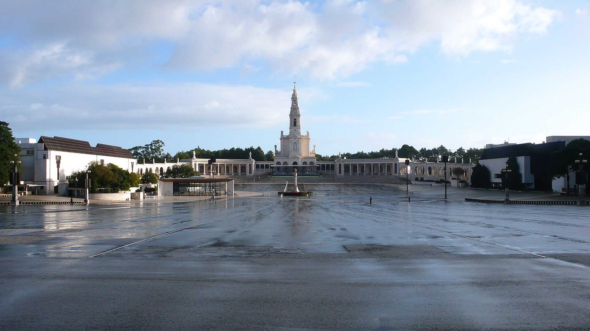
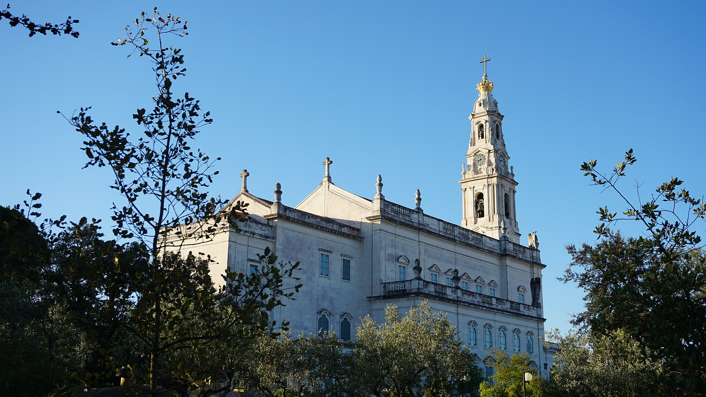
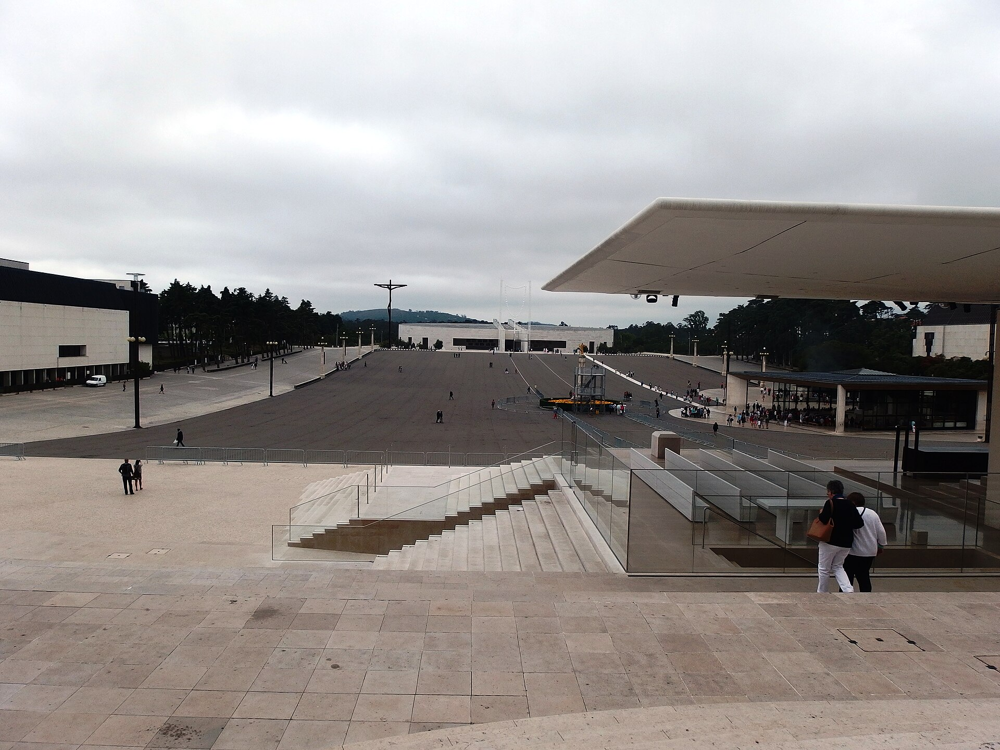

Scrivici su WhatsApp
Il pulsante qui sotto prepara un messaggio con il nome del viaggio. Puoi modificarlo e inviarlo quando vuoi.

CLICK&VIAGGIA / FÁTIMA
Il tempo di fermarsi, lo spazio per ritrovarsi. Fátima è un invito a partire insieme e dare valore a ciò che conta.
L’ESPERIENZA
Ci sono luoghi che invitano a respirare e ritrovare ciò che conta. Fátima è un’idea di viaggio per chi cerca raccoglimento, spiritualità e il piacere di condividere il cammino.
Il team Click&Viaggia sta preparando la proposta. Raccontaci come immagini questa esperienza: un appuntamento è il primo passo per conoscere gli aggiornamenti e fare spazio alla tua prossima partenza.
UNO SGUARDO A FÁTIMA
La luce sulla Basilica, gli spazi del Santuario: immagini per iniziare a immaginare la tua esperienza.


COME SAPERNE DI PIÙ
La proposta è in preparazione e non è ancora prenotabile. Date, durata, programma, servizi, organizzatore e condizioni saranno comunicati prima di qualsiasi conferma.
Il pulsante qui sotto prepara un messaggio con il nome del viaggio. Puoi modificarlo e inviarlo quando vuoi.
Raccontaci con chi vorresti partire, il periodo che immagini e ciò che conta per te.
Il team ti presenta gli aggiornamenti e risponde alle tue domande. Valuta ogni dettaglio prima di decidere.
PARLIAMO DI FÁTIMA
Scrivici per concordare un appuntamento dedicato a Fátima.
Il team ti aiuterà a conoscere questa idea di viaggio.
Messaggio già pronto per Fátima · +39 389 296 2059
Foto della copertina: José Luis Filpo Cabana · Wikimedia Commons. Foto della Basilica: LLEW · Wikimedia Commons. Foto della Cappellina: Palickap · Wikimedia Commons. Tutte con licenza CC BY-SA 4.0. Le immagini sono ridimensionate; la copertina è ritagliata. La grafica scaricabile aggiunge testi e sovrapposizioni ed è disponibile con la stessa licenza. Le fotografie illustrano la destinazione e non definiscono il programma del viaggio.